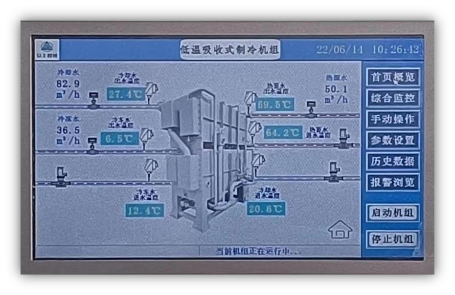
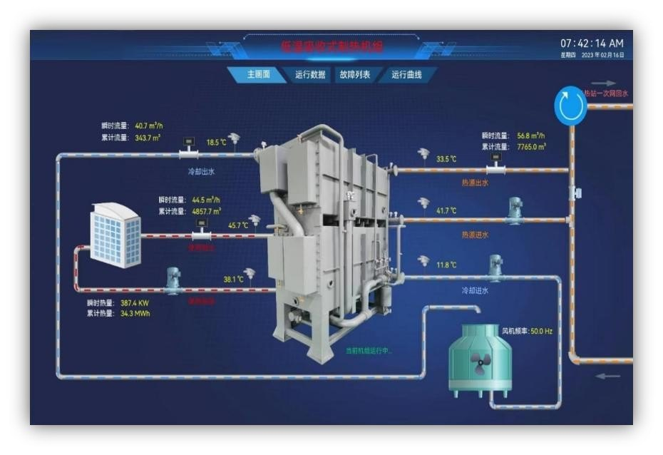
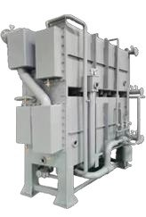
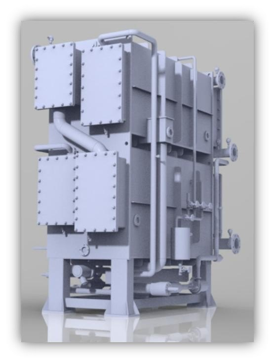
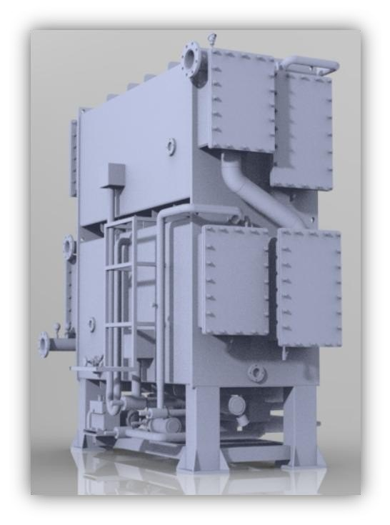
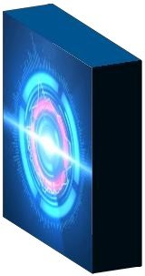

拓宽传统路线，突破温度瓶颈
新一代“低温驱动”吸收式热泵拓宽了传统溴化锂吸收式热泵的技术路线，突破国际技术瓶颈，大幅度降低驱动热源的温度要求（下降20-60°C）。将工业废热变废为宝、再生能源化，作为溴化锂蒸发动力，是一种应用更为广泛、超低能耗、零排放的工业及民用冷热技术，具有节能、减排、降耗的多重功效。
低温热量，制取工艺冷热
低温驱动
35°C温水制热，60°C温水制冷。
超低能耗
电能消耗只占输出功率6‰。
高效率
冷热转换效率提高25%以上。
再生能源化
工业废热转换为再生能源。
真空循环，完成制冷过程
机组主体由蒸发器、吸收器组成的下筒体，冷凝器、发生器组成的上筒体，以及溶液热交换器、溶液泵、冷剂泵、抽气系统等构成。制冷机工作时主体处于真空状态：蒸发器内低温冷剂水吸收用户冷媒水热量，使冷媒水温度降低并蒸发为冷剂蒸汽；吸收器内溴化锂浓溶液吸收蒸汽后变为稀溶液，经溶液泵与热交换器升温后送至发生器。发生器内稀溶液经高温热水加热成为高温浓溶液并产生高温冷剂蒸汽，浓溶液换热后回到吸收器；冷剂蒸汽在冷凝器内冷却成低温冷剂水，经降压节流后进入蒸发器，完成一个制冷循环。


智能控制与多重保护
智能控制
工业级PLC与全中文触摸屏。
远程监测
运行数据诊断与故障预警。
安全可靠
行业器件与严格出厂质检。
高效节能
综合能耗仅为输出功率千分之六。
多重保护
权限、温度、流量与过载保护。
机组类型
制冷、制热与双效机组。
型号、能效与减排数据
| 项目 | AFZYⅡ-260L | AFZYⅡ-1500L | AFZYⅡ-3000L |
|---|---|---|---|
| 制冷量（kW） | 260 | 1500 | 3000 |
| 机组功率（kW） | 2.5 | 7.8 | 14 |
| 系统能效 COP | 32.5 | 39.7 | 40.5 |
| 年节电量（kWh） | 251,733 | 1,479,040 | 2,963,200 |
| 年节约电费（元） | 201,387 | 1,183,232 | 2,370,560 |
| 标煤减排（吨/年） | 30.9 | 181.8 | 364.2 |
| 二氧化碳减排（吨/年） | 77.2 | 453.2 | 907.9 |
以上为建筑制冷工况（16小时/日、25天/月、8个月/年、固定平均电价0.80元/度）下资料所列数据，实际以项目核算为准。
工业余热，变废为宝
日本电产（大连）
回收空压机65-73°C余热，制取12°C-5°C冷水。
龙星化工
利用63-70°C工艺废热，制取15°C-7°C冷冻水。
某焦化厂
利用40°C脱硫浆液废热，供暖回水由40升至50°C。
某焦化厂案例采用AFZYⅡ-(40/30)-2700R型号设备，在实现供暖回水升温的同时将脱硫浆液温度降至30°C，实现烟囱消白。资料中亦列出蒸汽型、压缩式与低温吸收式热泵的设备数量、投资与运行费用对比。
设备外观与控制画面




节能降碳，共赢未来
交流请＋微信 · 节能方案与项目洽谈
从现场调研、运行测试到方案设计、施工实施与效果核正，为企业提供节能减排、工程咨询、设计、施工、调试与运维一体服务。
- 能源管理系统
- 中央空调节能技改
- 空压机节能改造
- 节能风机改造工程咨询
- 超低温吸收式热泵
- 调试与运维服务
微信扫码 · 交流合作
交流请＋
节能改造与能源管理项目洽谈